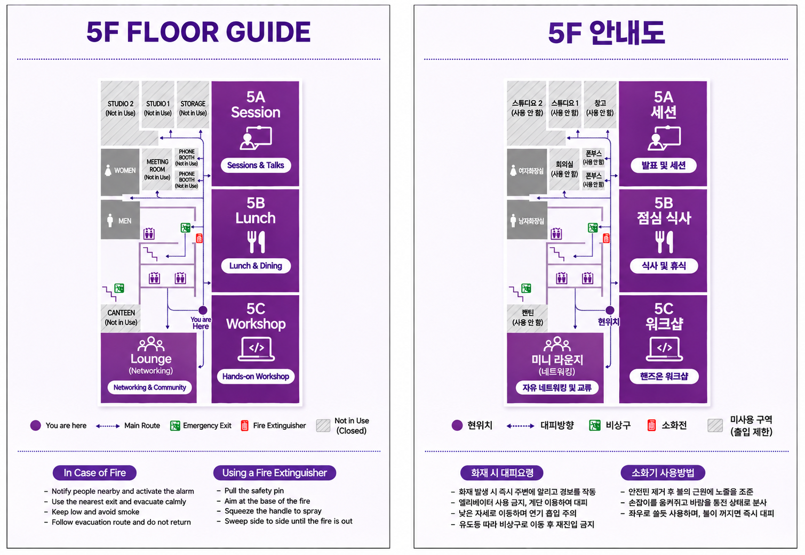

📶 행사장 와이파이 (Wi-Fi)
현장에 공지해 두겠지만, 편의상 공유 문서로도 남겨 둘게요.
🗺️ 5F 행사장 안내도 (Venue Plan)

- 5C 룸: 오전 전체 세션(오프닝, 키노트, 101, 단체사진), 오후 핸즈온 스프린트 워크샵(13:20 ~ 16:30), 통합 클로징
- 5B 룸: 점심 식사 (12:20 ~ 13:20) 및 휴식 공간
- 5A 세션 룸: 오후 정규 발표 세션 (13:20 ~ 16:30, 세션 2~6)
- 미니 라운지: 남쪽 위치, 행사 중 자유로운 네트워킹 및 휴식 공간
- 화장실 위치: 엘리베이터 맞은편 서쪽 복도 (남자/여자 화장실 구분)
- ⚠️ 미사용 구역 (출입 제한): 캔틴, 회의실, 폰부스, 스튜디오 1/2 구역은 진입 금지
📌 파트별 분배
🧑🤝🧑 담당자 배정표
| 이름 | 담당 | 상세 가이드 |
|---|---|---|
| 강*석 | 사진 보조 | 보기 → |
| 김*진 | 사진 보조 | 보기 → |
| 김*율 | 리셉션 보조 | 보기 → |
| 조*형 | 리셉션 보조 | 보기 → |
| 김*현 | 발표자/사회 보조 | 보기 → |
| 정*진 | 발표자/사회 보조 | 보기 → |
| 김*훈 | 현장 보조 | 보기 → |
| 정*미 | 현장 보조 | 보기 → |
| 신*호 | 미디어 | 보기 → |
👥 파트별 업무 내용
| 파트 | 주요 업무 내용 | 상세 가이드 |
|---|---|---|
| 사진 | TBD (현장 안내 예정) - 현장 스케치, 단체사진 보조 등 | 보기 → |
| 리셉션 | TBD (현장 안내 예정) - 참가자 명단 확인, 명찰 배부 등 | 보기 → |
| 발표 | 발표자 대기 및 장치 점검, 마이크 전달 (대본 보기) | 보기 → |
| 현장 | 동선/착석 안내 | 보기 → |
| 미디어 | TBD (현장 안내 예정) - 영상 촬영 및 장비 보조 등 | 보기 → |
⏰ 전체 행사 타임라인
- 10:00 – 10:30: 체크인 및 입장
- 10:30 – 10:50: [5C] 오프닝 및 2026 활동 보고
- 10:50 – 11:40: [5C] 키노트: Eight Times the Reports (Jarek Potiuk)
- 11:40 – 12:05: [5C] 세션 1: Apache Airflow 101 (운영진)
- 12:05 – 12:20: [5C] 스프린트 안내 & 전체 단체사진 촬영
- 12:20 – 13:20: [5B] 점심 식사 및 네트워킹
- 13:20 – 16:30 (오후 트랙 동시 진행):
• 5A 세션 룸 (발표): 세션 2~6 정규 발표 (이선엽, 운영진, 한상곤, 김태연, 남상균)
• 5C 워크샵 룸 (스프린트): 첫 PR 스프린트 워크샵 (Jarek Potiuk, 추영욱) - 16:30 – 17:00: [5C 통합] 라이트닝 토크 & 클로징 (스프린트 결과 발표)
- 18:00 – 21:30: 컨퍼런스 디너 (사전 신청자)
📢 공통 운영 수칙
- 집합 시간 및 장소: 행사 시작 전 / 5층 메인 로비
- 이동 경로 에티켓: 세션 진행 중 무대 전면 횡단 금지, 객석 뒤편 복도 통행
- 비상 연락망: 총괄 담당자 / 긴급 상황 시 오픈카톡 즉시 공유
- 식사 및 휴식: 5B 룸 및 미니 라운지 이용 (명찰 상시 패용)